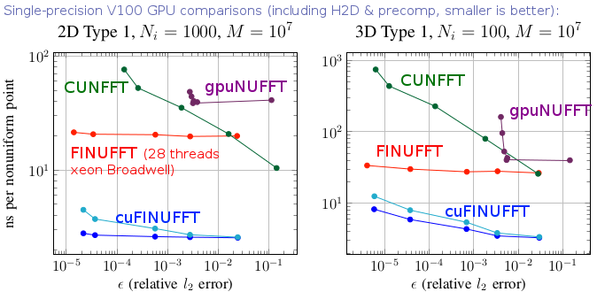

Flatiron Institute Nonuniform Fast Fourier Transform

FINUFFT is a library to compute efficiently the three most common types of nonuniform fast Fourier transform (NUFFT) to a specified precision, in one, two, or three dimensions, either on a multi-core shared-memory machine, or on a GPU. It is extremely fast (typically achieving $10^6$ to $10^8$ points per second on a CPU, or up to $10^9$ points per second on a GPU), has very simple interfaces to most major numerical languages (C/C++, Fortran, MATLAB, octave, Python, and Julia), but also has more advanced (vectorized and "guru") interfaces that allow multiple strength vectors and the reuse of FFT plans. The CPU library is written in C++ (with limited use of ++ features), OpenMP, and calls FFTW. It has been developed since 2017 at the Center for Computational Mathematics at the Flatiron Institute, by :ref:`Alex Barnett and others<ackn>`, and is released under an Apache v2 license. Here is a project overview.
What does FINUFFT do?
As an example, given $M$ real numbers $x_j in [0,2pi)$, and complex numbers $c_j$, with $j=1,dots,M$, and a requested integer number of modes $N$, FINUFFT can efficiently compute the 1D "type 1" transform, which means to evaluate the $N$ complex outputs
As with other "fast" algorithms, FINUFFT does not evaluate this sum directly---which would take $O(NM)$ effort---but rather uses a sequence of steps (in this case, optimally chosen spreading, FFT, and deconvolution) to approximate the vector of answers :eq:`1d1` to within the user's desired relative tolerance, with only $O(N log N +M)$ effort, ie, in almost linear time. Thus the speed-up is similar to that of the FFT. You may now want to jump to :ref:`quickstart <quick>`, or see the :ref:`definitions <math>` of the other transforms in general dimension.
One interpretation of :eq:`1d1` is: the returned values $f_k$ are the Fourier series coefficients of the $2pi$-periodic distribution $f(x) := sum_{j=1}^M c_j delta(x-x_j)$, a sum of point-masses with arbitrary locations $x_j$ and strengths $c_j$. Such exponential sums are needed in many applications in science and engineering, including signal processing (scattered data interpolation, applying convolutional transforms, fast summation), imaging (cryo-EM, CT, MRI, synthetic aperture radar, coherent diffraction, Fresnel aperture modeling, VLBI astronomy), numerical analysis (computing Fourier transforms of functions, moving between non-conforming quadrature grids, solving partial differential equations, Ewald methods), and finance (correlation estimators). See our :ref:`tutorials and demos<tut>` pages and the :ref:`related works<related>` for examples of how to use the NUFFT in applications. In fact, there are several application areas where it has been overlooked that the needed computation is simply a NUFFT (eg, particle-mesh Ewald in molecular dynamics).
Why FINUFFT? Features and comparison against other CPU NUFFT libraries
The basic scheme used by FINUFFT is not new, but there are many mathematical and software engineering improvements over other CPU libraries (see below for :ref:`GPU features<gpu>`). As is common in NUFFT algorithms, under the hood is an FFT on a regular "fine" (upsampled) grid---the user has no need to access this directly. Nonuniform points are either spread to, or interpolated from, this fine grid, using a specially designed kernel (see right figure above). Our main features are:
- High speed. For instance, at similar accuracy, FINUFFT is up to 10x faster than the multi-threaded Chemnitz NFFT3 library, and (in single-thread mode) up to 50x faster than the CMCL NUFFT library. This is achieved via:
- a simple new "exponential of semicircle" kernel that is provably close to optimal
- quadrature approximation for this kernel's Fourier transform
- load-balanced multithreaded spreading/interpolation
- bin-sorting of points to improve cache reuse
- a low upsampling option for smaller FFTs, especially in type 3 transforms
- piecewise polynomial kernel evaluation (additions and multiplications only) that SIMD-vectorizes reliably on open-source compilers
- Less RAM. Our kernel is so fast that there is no point in precomputation; it is always evaluated on the fly. Thus our memory footprint is often an order of magnitude less than the fastest (precomputed) modes of competitors such as NFFT3 and MIRT, especially at high accuracy.
- Automated kernel parameters. Unlike many competitors, we do not force the user to worry about kernel choice or parameters. The user simply requests a desired relative accuracy, then FINUFFT chooses parameters to target this accuracy as fast as possible.
- Simplicity. We provide interfaces that perform a NUFFT with a single command---just like an FFT---from seven common languages/environments. For advanced users we also have "many vector" interfaces that can be much faster than repeated calls to the simple interface with the same points. Finally (like NFFT3) we have a "guru" interface for maximum flexibility, in all of these languages.
For technical details on much of the above see our :ref:`papers <refs>`. Note that there are other tasks (eg, transforms on spheres, inverse NUFFTs) provided by other libraries, such as NFFT3, that FINUFFT does not provide.
GPU version: cuFINUFFT
In 2021 we released cuFINUFFT, a CUDA implementation of type 1 and 2 transforms in dimensions 2 and 3, developed mostly by Yu-Hsuan (Melody) Shih as a CCM summer intern and NYU graduate student (in 2022 she moved to NVidia). It is often 10x faster than the CPU code, and up to 100x faster than other established GPU NUFFT codes, as the above graph indicates (see [S21] in our :ref:`references<refs>`). This is achieved in part by developing a type 1 algorithm that exploits fast GPU shared memory, which requires hand-tuned choices of bin-sizes due to the small memory size (49kB per thread block). Both double and single precision are supported, and a Python interface. Please see sections of this documentation labeled "GPU". In 2023 we added dimension 1, and merged cuFINUFFT into the FINUFFT repository. Further unification of the interfaces, underlying algorithm, and completion of type 3 on the GPU are still in progress.
Do I even need a NUFFT?
A user's need for a nonuniform fast Fourier transform is often obscured by the lack of mathematical description in science application areas. Therefore, read our :ref:`tutorials and demos<tut>` to try and match to your task. Write the task in terms of one of the :ref:`three transform types<math>`. If both $M$ and $N$ are larger than of order $10^2$, FINUFFT should be the ticket. However, if $M$ and/or $N$ is small (of order $10$ or less), there is no need for a "fast" algorithm: simply evaluate the sums directly.
If you need to fit off-grid data to a Fourier representation (eg, if you have off-grid $mathbf{k}$-space samples of an unknown image) but you do not have quadrature weights for the off-grid points, you may need to invert the NUFFT, which actually means solving a large linear system; see our :ref:`tutorials and demos<tut>`, and :ref:`references<refs>` [GLI] [KKP]. Poor coverage by the nonuniform point set will cause ill-conditioning and a heavy reliance on regularization.
Another scenario is that you wish to evaluate a forward transform such as :eq:`1d1` repeatedly with the same set of nonuniform points $x_j$, but fresh strength vectors ${c_j}_{j=1}^M$, as in the "many vectors" interface mentioned above. For small such problems it may be even faster to fill an $N$-by-$M$ matrix $A$ with entries $a_{kj} = e^{ik x_j}$, then use BLAS3 (eg ZGEMM) to compute $F = AC$, where each column of $F$ and $C$ is a new instance of :eq:`1d1`. If you have very many columns this can be competitive with a NUFFT even for $M$ and $N$ up to $10^4$, because BLAS3 is so fast.